CODING AGENTS AS PIXEL WORLD MODELS
traex/DeepSeek-V4.1-Flash · common50_0005
点击播放 · 原生 RGB 像素
逐轮保存的候选
回放视频、检查图与代码变化。
每份候选均可单独播放。实际图片检查记录在下方工具轨迹中。
候选 01播放与检查图
点击播放 · 原生 RGB 像素

展开代码变化
--- 上一保存版本
+++ 本次保存版本
@@ -0,0 +1,396 @@
+"""Generate the requested 20-frame robotic mug-transfer clip."""
+
+from pathlib import Path
+import math
+
+import numpy as np
+from PIL import Image, ImageDraw, ImageFilter
+
+from artifact_io import save
+
+
+ROOT = Path(__file__).resolve().parent
+WIDTH, HEIGHT = 256, 192
+FRAME_COUNT = 20
+SCALE = 4
+
+
+def smoothstep(value):
+ value = float(np.clip(value, 0.0, 1.0))
+ return value * value * (3.0 - 2.0 * value)
+
+
+def polygon_mask(size, points):
+ image = Image.new("L", size, 0)
+ draw = ImageDraw.Draw(image)
+ draw.polygon(points, fill=255)
+ return np.asarray(image)
+
+
+def ellipse_mask(size, center, radius):
+ image = Image.new("L", size, 0)
+ draw = ImageDraw.Draw(image)
+ cx, cy = center
+ rx, ry = radius
+ draw.ellipse((cx - rx, cy - ry, cx + rx, cy + ry), fill=255)
+ return np.asarray(image)
+
+
+def make_clean_plate(frame):
+ """Fill only the selected mug and its small contact shadow."""
+ clean = frame.copy()
+ mask = np.zeros((HEIGHT, WIDTH), dtype=np.uint8)
+
+ outline = np.array(
+ [
+ [81, 85], [90, 77], [103, 77], [112, 80], [118, 87],
+ [119, 97], [116, 109], [111, 118], [103, 123], [94, 121],
+ [86, 115], [81, 107], [78, 97],
+ ],
+ dtype=np.int32,
+ )
+ cup_mask = polygon_mask((WIDTH, HEIGHT), [tuple(point) for point in outline])
+ shadow = ellipse_mask((WIDTH, HEIGHT), (104, 119), (16, 6))
+ mask = np.maximum(cup_mask, shadow)
+ mask[:76] = 0
+ mask[125:] = 0
+ mask[:, :77] = 0
+ mask[:, 121:] = 0
+
+ # Reconstruct the smooth blue bin surface from the unobstructed pixels
+ # immediately to either side of the removed cup.
+ rng = np.random.default_rng(17)
+ noise = rng.normal(0.0, 1.4, (HEIGHT, WIDTH, 1))
+ for y in range(76, 125):
+ row_mask = mask[y] > 0
+ if not np.any(row_mask):
+ continue
+ xs = np.flatnonzero(row_mask)
+ left = xs.min() - 1
+ right = xs.max() + 1
+ left_pixel = frame[y, left].astype(np.float32)
+ right_pixel = frame[y, right].astype(np.float32)
+ t = (xs - left) / max(1, right - left)
+ clean[y, xs] = (
+ left_pixel[None, :] * (1.0 - t[:, None])
+ + right_pixel[None, :] * t[:, None]
+ ).astype(np.uint8)
+
+ clean_float = clean.astype(np.float32) + noise
+ soft_mask = Image.fromarray(mask).filter(ImageFilter.GaussianBlur(1.2))
+ alpha = np.asarray(soft_mask).astype(np.float32)[:, :, None] / 255.0
+ return np.clip(
+ frame.astype(np.float32) * (1.0 - alpha)
+ + clean_float * alpha,
+ 0,
+ 255,
+ ).astype(np.uint8)
+
+
+def make_mug_sprite(frame):
+ """Extract the front-left pink mug while retaining its original pixels."""
+ x0, y0, x1, y1 = 77, 76, 119, 122
+ crop = frame[y0:y1, x0:x1].copy()
+ size = (x1 - x0, y1 - y0)
+
+ body = [
+ (15, 9), (24, 4), (32, 6), (37, 12), (37, 20),
+ (35, 33), (31, 41), (24, 43), (17, 41), (13, 33),
+ (11, 25), (11, 16),
+ ]
+ alpha = polygon_mask(size, body).copy()
+
+ # The handle is a thick open loop on the left side of the cup.
+ outer = Image.new("L", size, 0)
+ inner = Image.new("L", size, 0)
+ od = ImageDraw.Draw(outer)
+ idr = ImageDraw.Draw(inner)
+ od.ellipse((3, 12, 19, 39), fill=255)
+ idr.ellipse((7, 17, 16, 34), fill=255)
+ ring = np.asarray(outer) > 0
+ hole = np.asarray(inner) > 0
+ ring &= ~hole
+ alpha[ring] = 255
+
+ # Feather only the outer edge; preserve the photographic cup surface.
+ alpha_image = Image.fromarray(alpha).filter(ImageFilter.GaussianBlur(0.45))
+ alpha = np.asarray(alpha_image)
+ rgba = np.dstack([crop, alpha])
+ return rgba, (x0, y0)
+
+
+def capsule(draw, start, end, width, fill):
+ x0, y0 = start
+ x1, y1 = end
+ radius = width / 2.0
+ draw.line((x0, y0, x1, y1), fill=fill, width=int(round(width)))
+ draw.ellipse((x0 - radius, y0 - radius, x0 + radius, y0 + radius), fill=fill)
+ draw.ellipse((x1 - radius, y1 - radius, x1 + radius, y1 + radius), fill=fill)
+
+
+def draw_arm(draw, wrist, open_amount, shadow=False):
+ """Draw a dark two-link arm and parallel-jaw gripper at 4x resolution."""
+ s = SCALE
+ wx, wy = wrist[0] * s, wrist[1] * s
+ shoulder = (-24 * s, 205 * s)
+ elbow = ((wrist[0] - 34) * s, (wrist[1] + 38) * s)
+
+ if shadow:
+ capsule(draw, (shoulder[0] + 7 * s, shoulder[1] + 5 * s),
+ (elbow[0] + 7 * s, elbow[1] + 5 * s), 21 * s, (12, 18, 24, 92))
+ capsule(draw, (elbow[0] + 7 * s, elbow[1] + 5 * s),
+ (wx + 7 * s, wy + 5 * s), 16 * s, (12, 18, 24, 92))
+ draw.rounded_rectangle(
+ (wx - 10 * s, wy - 15 * s, wx + 9 * s, wy + 15 * s),
+ radius=5 * s, fill=(12, 18, 24, 88),
+ )
+ return
+
+ # Main links.
+ capsule(draw, shoulder, elbow, 21 * s, (37, 40, 45, 255))
+ capsule(draw, elbow, (wx, wy), 16 * s, (48, 51, 56, 255))
+ capsule(draw, (shoulder[0], shoulder[1] - 3 * s),
+ (elbow[0], elbow[1] - 3 * s), 4 * s, (95, 99, 105, 220))
+ capsule(draw, (elbow[0], elbow[1] - 2 * s),
+ (wx - s, wy - 2 * s), 3 * s, (111, 116, 122, 205))
+
+ # Shoulder and wrist joints.
+ draw.ellipse(
+ (elbow[0] - 10 * s, elbow[1] - 10 * s, elbow[0] + 10 * s, elbow[1] + 10 * s),
+ fill=(31, 34, 38, 255),
+ )
+ draw.ellipse(
+ (elbow[0] - 5 * s, elbow[1] - 5 * s, elbow[0] + 5 * s, elbow[1] + 5 * s),
+ fill=(79, 83, 88, 255),
+ )
+ draw.ellipse(
+ (wx - 11 * s, wy - 11 * s, wx + 11 * s, wy + 11 * s),
+ fill=(54, 58, 63, 255),
+ )
+ draw.ellipse(
+ (wx - 5 * s, wy - 5 * s, wx + 5 * s, wy + 5 * s),
+ fill=(18, 20, 23, 255),
+ )
+
+ # Palm.
+ draw.rounded_rectangle(
+ (wx - 9 * s, wy - 15 * s, wx + 8 * s, wy + 15 * s),
+ radius=5 * s,
+ fill=(39, 42, 47, 255),
+ outline=(17, 19, 22, 255),
+ width=max(1, int(1.2 * s)),
+ )
+ draw.rounded_rectangle(
+ (wx - 4 * s, wy - 11 * s, wx + 4 * s, wy - 5 * s),
+ radius=2 * s,
+ fill=(67, 72, 78, 255),
+ )
+
+ # Parallel fingers. They close around the mug's upper and lower body.
+ spread = open_amount * 4.0
+ upper_base = (wx + 4, wy - 10)
+ lower_base = (wx + 4, wy + 10)
+ upper_mid = (wx + 18, wy - 18 - spread)
+ lower_mid = (wx + 18, wy + 18 + spread)
+ upper_tip = (wx + 29, wy - 12 - spread * 0.45)
+ lower_tip = (wx + 29, wy + 13 + spread * 0.45)
+
+ for base, mid, tip in (
+ (upper_base, upper_mid, upper_tip),
+ (lower_base, lower_mid, lower_tip),
+ ):
+ points = [
+ (base[0] * s, base[1] * s),
+ (mid[0] * s, mid[1] * s),
+ (tip[0] * s, tip[1] * s),
+ ]
+ draw.line(points, fill=(30, 33, 37, 255), width=int(6.2 * s), joint="curve")
+ draw.line(points, fill=(70, 75, 81, 255), width=int(2.1 * s), joint="curve")
+ draw.ellipse(
+ (tip[0] * s - 3.4 * s, tip[1] * s - 3.4 * s,
+ tip[0] * s + 3.4 * s, tip[1] * s + 3.4 * s),
+ fill=(25, 28, 31, 255),
+ )
+
+
+def render_arm(wrist, open_amount, shadow=False):
+ canvas = Image.new("RGBA", (WIDTH * SCALE, HEIGHT * SCALE), (0, 0, 0, 0))
+ draw = ImageDraw.Draw(canvas)
+ draw_arm(draw, wrist, open_amount, shadow=shadow)
+ return canvas.resize((WIDTH, HEIGHT), Image.Resampling.LANCZOS)
+
+
+def make_contact_shadow(cx, cy, strength):
+ canvas = Image.new("RGBA", (WIDTH, HEIGHT), (0, 0, 0, 0))
+ draw = ImageDraw.Draw(canvas)
+ rx = 12.0 + 3.0 * (1.0 - strength)
+ ry = 4.2 + 1.6 * (1.0 - strength)
+ draw.ellipse(
+ (cx - rx, cy - ry, cx + rx, cy + ry),
+ fill=(8, 22, 30, int(92 * strength)),
+ )
+ return canvas.filter(ImageFilter.GaussianBlur(2.2))
+
+
+def composite_rgba(base, overlay):
+ base_rgba = base.convert("RGBA")
+ return Image.alpha_composite(base_rgba, overlay).convert("RGB")
+
+
+def paste_mug(base, sprite, sprite_origin, center):
+ crop, (x0, y0) = sprite
+ crop_h, crop_w = crop.shape[:2]
+ center_x, center_y = center
+ # The original mug center is (101, 100), relative to the sprite origin.
+ left = int(round(center_x - (101 - x0)))
+ top = int(round(center_y - (100 - y0)))
+
+ mug = Image.fromarray(crop, mode="RGBA")
+ canvas = base.convert("RGBA")
+ canvas.alpha_composite(mug, dest=(left, top))
+ return canvas.convert("RGB")
+
+
+def draw_front_fingertips(base, wrist, open_amount):
+ """Add small foreground tips so the grip remains readable over the cup."""
+ canvas = Image.new("RGBA", (WIDTH * SCALE, HEIGHT * SCALE), (0, 0, 0, 0))
+ draw = ImageDraw.Draw(canvas)
+ s = SCALE
+ wx, wy = wrist
+ spread = open_amount * 4.0
+ for sign in (-1, 1):
+ tip_y = wy + sign * (13.0 + spread * 0.45)
+ tip_x = wx + 29.0
+ capsule(
+ draw,
+ ((tip_x - 7) * s, (tip_y - sign * 1.2) * s),
+ (tip_x * s, tip_y * s),
+ 5.0 * s,
+ (29, 32, 36, 255),
+ )
+ capsule(
+ draw,
+ ((tip_x - 6) * s, (tip_y - sign * 1.2 - 1.3) * s),
+ ((tip_x - 1) * s, (tip_y - sign * 0.4 - 1.3) * s),
+ 1.3 * s,
+ (96, 101, 107, 235),
+ )
+ overlay = canvas.resize((WIDTH, HEIGHT), Image.Resampling.LANCZOS)
+ return composite_rgba(base, overlay)
+
+
+def mug_centers():
+ keys = {
+ 0: (101.0, 100.0),
+ 4: (101.0, 100.0),
+ 5: (99.0, 94.0),
+ 6: (94.0, 85.0),
+ 7: (87.0, 78.0),
+ 8: (78.0, 75.0),
+ 9: (69.0, 76.0),
+ 10: (61.0, 81.0),
+ 11: (55.0, 89.0),
+ 12: (50.0, 100.0),
+ 13: (47.0, 113.0),
+ 14: (45.0, 128.0),
+ 15: (44.0, 141.0),
+ 16: (43.0, 149.0),
+ 17: (43.0, 151.0),
+ 18: (43.0, 151.0),
+ 19: (43.0, 151.0),
+ }
+ result = []
+ for frame_index in range(FRAME_COUNT):
+ if frame_index in keys:
+ result.append(keys[frame_index])
+ continue
+ lower = max(key for key in keys if key < frame_index)
+ upper = min(key for key in keys if key > frame_index)
+ t = (frame_index - lower) / (upper - lower)
+ t = smoothstep(t)
+ a = np.array(keys[lower], dtype=np.float32)
+ b = np.array(keys[upper], dtype=np.float32)
+ result.append(tuple((a * (1.0 - t) + b * t).tolist()))
+ return result
+
+
+def wrist_positions(centers):
+ approach = {
+ 0: (27.0, 166.0),
+ 1: (31.0, 158.0),
+ 2: (42.0, 143.0),
+ 3: (58.0, 121.0),
+ 4: (75.0, 102.0),
+ }
+ result = []
+ for frame_index, center in enumerate(centers):
+ if frame_index in approach:
+ result.append(approach[frame_index])
+ elif frame_index <= 16:
+ result.append((center[0] - 25.0, center[1] + 2.0))
+ elif frame_index == 17:
+ result.append((14.0, 158.0))
+ elif frame_index == 18:
+ result.append((5.0, 171.0))
+ else:
+ result.append((-8.0, 184.0))
+ return result
+
+
+def main():
+ first = np.asarray(Image.open(ROOT / "first_frame.png").convert("RGB"))
+ assert first.shape == (HEIGHT, WIDTH, 3)
+
+ clean_plate = make_clean_plate(first)
+ mug_sprite = make_mug_sprite(first)
+ centers = mug_centers()
+ wrists = wrist_positions(centers)
+ frames = []
+
+ for index in range(FRAME_COUNT):
+ if index == 0:
+ frames.append(first.copy())
+ continue
+
+ center = centers[index]
+ wrist = wrists[index]
+ if index <= 5:
+ base_array = first.copy()
+ else:
+ base_array = clean_plate.copy()
+
+ base = Image.fromarray(base_array, mode="RGB")
+
+ if index >= 5:
+ height = max(0.0, 100.0 - center[1])
+ shadow_strength = float(np.clip(0.78 - height / 90.0, 0.28, 0.78))
+ shadow_y = center[1] + 21.0 + min(18.0, height * 0.22)
+ shadow = make_contact_shadow(center[0] + 3.0, shadow_y, shadow_strength)
+ base = composite_rgba(base, shadow)
+
+ if index <= 18:
+ open_amount = 1.0 if index <= 3 or index >= 16 else 0.0
+ arm_shadow = render_arm(wrist, open_amount, shadow=True)
+ arm = render_arm(wrist, open_amount, shadow=False)
+ base = composite_rgba(base, arm_shadow)
+ base = composite_rgba(base, arm)
+
+ if index <= 4:
+ # Keep the original cup exact while the gripper approaches.
+ pass
+ else:
+ base = paste_mug(base, mug_sprite, (77, 76), center)
+
+ if index <= 18:
+ open_amount = 1.0 if index <= 3 or index >= 16 else 0.0
+ base = draw_front_fingertips(base, wrist, open_amount)
+
+ frames.append(np.asarray(base, dtype=np.uint8))
+
+ frames = np.stack(frames, axis=0)
+ assert frames.shape == (FRAME_COUNT, HEIGHT, WIDTH, 3)
+ save(frames, ROOT)
+
+
+if __name__ == "__main__":
+ main()
候选 02播放与检查图
点击播放 · 原生 RGB 像素
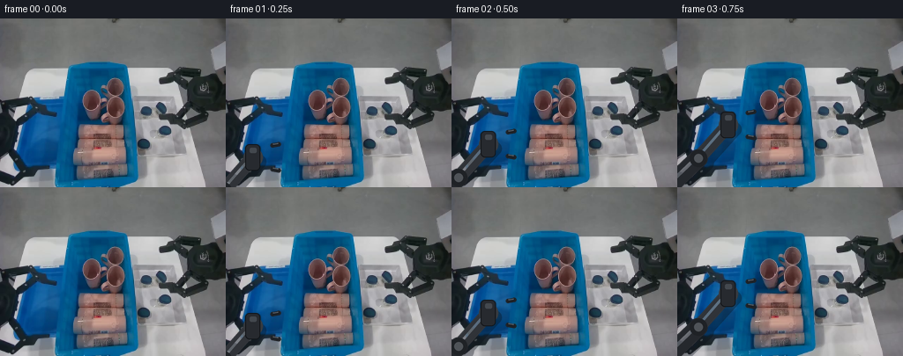
展开代码变化
--- 上一保存版本
+++ 本次保存版本
@@ -79,12 +79,42 @@
clean_float = clean.astype(np.float32) + noise
soft_mask = Image.fromarray(mask).filter(ImageFilter.GaussianBlur(1.2))
alpha = np.asarray(soft_mask).astype(np.float32)[:, :, None] / 255.0
- return np.clip(
+ clean_result = np.clip(
frame.astype(np.float32) * (1.0 - alpha)
+ clean_float * alpha,
0,
255,
).astype(np.uint8)
+
+ # The left gripper also moves. Reconstruct the table and bin behind it
+ # from surrounding unobstructed pixels so no duplicate arm remains.
+ arm_mask = np.zeros((HEIGHT, WIDTH), dtype=np.uint8)
+ arm_outline = np.array(
+ [
+ [0, 126], [7, 126], [12, 130], [18, 136], [24, 143],
+ [29, 149], [33, 154], [38, 159], [45, 162], [52, 165],
+ [58, 168], [61, 172], [58, 176], [52, 176], [46, 173],
+ [39, 170], [33, 167], [28, 164], [24, 168], [29, 174],
+ [35, 178], [40, 182], [37, 186], [30, 186], [23, 183],
+ [17, 179], [11, 175], [5, 173], [0, 173],
+ ],
+ dtype=np.int32,
+ )
+ arm_mask = polygon_mask(
+ (WIDTH, HEIGHT), [tuple(point) for point in arm_outline]
+ ).copy()
+ arm_mask[:125] = 0
+ arm_mask[:, 64:] = 0
+ arm_soft = Image.fromarray(arm_mask).filter(ImageFilter.GaussianBlur(1.4))
+ arm_alpha = np.asarray(arm_soft).astype(np.float32)[:, :, None] / 255.0
+ arm_replacement = Image.fromarray(clean_result).filter(ImageFilter.GaussianBlur(9))
+ clean_result = np.clip(
+ clean_result.astype(np.float32) * (1.0 - arm_alpha)
+ + np.asarray(arm_replacement).astype(np.float32) * arm_alpha,
+ 0,
+ 255,
+ ).astype(np.uint8)
+ return clean_result
def make_mug_sprite(frame):
可观测工具轨迹
实际执行的命令与返回图片。
命令 1exit 0
/bin/bash -c "pwd && rg --files -g 'prompt.txt' -g 'GENERATION_RULES.md' -g 'first_frame.png' -g '"'!**/.git/**'"'"
命令 2exit 0
/bin/bash -c "find . -maxdepth 2 -type f -printf '%p\\n' | sort | head -200"
命令 3exit 0
/bin/bash -c 'git status --short'
命令 4exit 0
/bin/bash -c 'cat prompt.txt'
命令 5exit 0
/bin/bash -c 'cat GENERATION_RULES.md'
命令 6exit 0
/bin/bash -c 'cat task_spec.json'
命令 7exit 0
/bin/bash -c "sed -n '1,260p' artifact_io.py"
命令 8exit 0
/bin/bash -c "python - <<'PY' import importlib.util for m in ['cv2','scipy','skimage','numpy','PIL']: print(m, bool(importlib.util.find_spec(m))) PY"
命令 9exit 0
/bin/bash -c "python - <<'PY'
from PIL import Image
im=Image.open('first_frame.png')
print(im.size, im.mode)
for name,box in [('bins',(0,40,256,192)),('mugs',(75,60,155,125)),('left',(0,85,75,192)),('right',(180,50,256,140))]:
im.crop(box).resize(((box[2]-box[0])*4,(box[3]-box[1])*4)).save('.tmp/'+name+'.png')
PY"命令 10exit 0
/bin/bash -c "python - <<'PY'
import cv2, numpy as np
im=cv2.imread('first_frame.png')
# output annotated coordinates
ann=im.copy()
for x in range(0,256,20):
cv2.line(ann,(x,0),(x,191),(220,220,220),1)
cv2.putText(ann,str(x),(x+1,12),cv2.FONT_HERSHEY_SIMPLEX,.25,(0,0,0),1,cv2.LINE_AA)
for y in range(0,192,20):
cv2.line(ann,(0,y),(255,y),(220,220,220),1)
cv2.putText(ann,str(y),(1,y+9),cv2.FONT_HERSHEY_SIMPLEX,.25,(0,0,0),1,cv2.LINE_AA)
cv2.imwrite('.tmp/grid.png',ann)
# crop mugs bigger smooth
cv2.imwrite('.tmp/mugs8.png',cv2.resize(im[55:135,85:160],None,fx=8,fy=8,interpolation=cv2.INTER_NEAREST))
PY"命令 11exit 0
/bin/bash -c "python - <<'PY'
import cv2, numpy as np
im=cv2.imread('first_frame.png')[:,:,::-1]
hsv=cv2.cvtColor(im[:,:,::-1],cv2.COLOR_BGR2HSV)
for y,x in [(105,109),(108,110),(112,107),(102,115),(95,115),(118,108),(86,130),(85,119),(100,142),(120,147),(100,50),(150,80)]:
print((x,y),'RGB',im[y,x],'HSV',hsv[y,x])
PY"命令 12exit 0
/bin/bash -c "python - <<'PY'
import cv2, numpy as np
im=cv2.imread('first_frame.png')[:,:,::-1]
hsv=cv2.cvtColor(im[:,:,::-1],cv2.COLOR_BGR2HSV)
# mug candidate mask pink-ish: r>b? maybe r > g*1.12 and r>60, exclude wood/robot
r,g,b=im[:,:,None].transpose(3,0,1,2) if False else (im[:,:,0],im[:,:,1],im[:,:,2])
mask=(r>g*1.12)&(r>b*1.05)&(r>55)&(g<105)&(np.indices(r.shape)[1]>80)&(np.indices(r.shape)[1]<165)&(np.indices(r.shape)[0]>65)&(np.indices(r.shape)[0]<135)
cv2.imwrite('.tmp/pinkmask.png',(mask*255).astype('uint8'))
# histogram row/col
for axis,name in [(1,'x'),(0,'y')]:
arr=mask.sum(axis=axis)
top=np.argsort(arr)[-20:]
print(name,sorted([(int(i),int(arr[i])) for i in top]))
PY"命令 13exit 0
/bin/bash -c "python - <<'PY'
from PIL import Image
im=Image.open('first_frame.png')
im.crop((65,55,160,135)).resize((760,640),Image.Resampling.NEAREST).save('.tmp/mugs_big.png')
PY"命令 14exit 0
/bin/bash -c "python - <<'PY'
from PIL import Image
im=Image.open('first_frame.png')
im.crop((0,70,85,192)).resize((680,976),Image.Resampling.NEAREST).save('.tmp/leftarm_big.png')
im.crop((0,115,75,192)).resize((750,770),Image.Resampling.NEAREST).save('.tmp/lefttray_big.png')
PY"命令 15exit 0
/bin/bash -c "python - <<'PY'
import cv2,numpy as np
im=cv2.imread('first_frame.png')[:,:,::-1]
# print some patch runs at selected y around mugs
for y in [75,80,85,90,95,100,105,110,115,120,125,130,135]:
# classify likely non-bg (brown/gray pink) x80-160
rgb=im[y]
vals=[]
for x in range(75,160):
r,g,b=rgb[x]
if r>g*1.05 and r>b*.95 and r>45 and g<110: vals.append(x)
# ranges
ranges=[]
for x in vals:
if not ranges or x>ranges[-1][1]+1:ranges.append([x,x])
else:ranges[-1][1]=x
print(y,ranges)
PY"命令 16exit 0
/bin/bash -c "python - <<'PY'
import cv2,numpy as np
im=cv2.imread('first_frame.png')
x0,y0,x1,y1=76,74,118,124
roi=im[y0:y1,x0:x1]
h,w=roi.shape[:2]
mask=np.full((h,w),cv2.GC_BGD,np.uint8)
# definite fg color seeds
b,g,r=roi[:,:,0],roi[:,:,1],roi[:,:,2]
seed=((r>g*1.04)&(r>b*.85)&(r>40)&(g<120)).astype(np.uint8)
# ellipse body and handle probable fg
yy,xx=np.mgrid[0:h,0:w]
body=((xx-(101-x0))/13)**2+((yy-(101-y0))/20)**2<1.1
rim=((xx-(101-x0))/13)**2+((yy-(88-y0))/8)**2<1.1
outer=((xx-(88-x0))/9.5)**2+((yy-(101-y0))/12)**2<1
inner=((xx-(90-x0))/5.5)**2+((yy-(101-y0))/7.5)**2<1
handle=outer&~inner&(xx>=81-x0)
prob=(body|rim|handle).astype(np.uint8)
mask[prob>0]=cv2.GC_PR_FGD
mask[seed>0]=cv2.GC_FGD
# definitely bg blue and outside region
blue=(b>g*1.15)&(b>70)
mask[blue]=cv2.GC_BGD
mask[:2]=0;mask[-2:]=0;mask[:,:2]=0;mask[:,-2:]=0
bgd=np.zeros((1,65),np.float64);fgd=np.zeros((1,65),np.float64)
cv2.grabCut(roi,mask,None,bgd,fgd,8,cv2.GC_INIT_WITH_MASK)
out=np.where(((mask==1)|(mask==3))[:,:,None],roi,0).astype(np.uint8)
cv2.imwrite('.tmp/mug_mask.png',out)
cv2.imwrite('.tmp/mug_mask_bin.png',((mask==1)|(mask==3)).astype(np.uint8)*255)
cv2.imwrite('.tmp/mug_mask_roi.png',roi)
PY"命令 17exit 0
/bin/bash -c "python - <<'PY'
import cv2
im=cv2.imread('.tmp/mug_mask_bin.png')
cv2.imwrite('.tmp/mug_mask_bin_big.png',cv2.resize(im,None,fx=8,fy=8,interpolation=cv2.INTER_NEAREST))
PY"命令 18exit 0
/bin/bash -c "python - <<'PY'
import cv2
im=cv2.imread('.tmp/mug_mask.png')
cv2.imwrite('.tmp/mug_mask_big.png',cv2.resize(im,None,fx=8,fy=8,interpolation=cv2.INTER_NEAREST))
PY"命令 19exit 0
/bin/bash -c "python - <<'PY'
import cv2,numpy as np
im=cv2.imread('first_frame.png')
x0,y0,x1,y1=76,74,118,124
roi=im[y0:y1,x0:x1]
h,w=roi.shape[:2]; yy,xx=np.mgrid[0:h,0:w]
# refined polygon/ellipse mask in ROI coords
mask=np.zeros((h,w),np.uint8)
# body ellipse
body=((xx-(101-x0))/13.2)**2+((yy-(101-y0))/18.5)**2<=1
# top rim extends a bit top
rim=((xx-(101-x0))/13.2)**2+((yy-(86-y0))/7.8)**2<=1
# handle outer ellipse x82-96 y89-114, subtract inner
outer=((xx-(88.5-x0))/8.2)**2+((yy-(102-y0))/13.5)**2<=1
inner=((xx-(89.8-x0))/5.1)**2+((yy-(102-y0))/9.5)**2<=1
handle=outer&~inner&(xx<=96-x0)&(yy>=87-y0)&(yy<=116-y0)
mask[(body|rim|handle)]=255
# exclude pixels that are obvious blue outside silhouette
b,g,r=roi[:,:,0].astype(int),roi[:,:,1].astype(int),roi[:,:,2].astype(int)
blue=(b>g*1.2)&(b>70)&(yy>111-y0)&(yy<122-y0)&(xx>90-x0)&(xx<109-x0)
mask[blue]=0
# cleanup small noise and feather
mask=cv2.morphologyEx(mask,cv2.MORPH_CLOSE,np.ones((3,3),np.uint8))
alpha=cv2.GaussianBlur(mask,(3,3),0).astype(np.float32)/255
out=im.copy()
# clean patch by copying same mug region from another? initial test fill blue + shadow
patch=im.copy()
cv2.imwrite('.tmp/mug_alpha.png',(alpha*255).astype(np.uint8))
cv2.imwrite('.tmp/mug_roi.png',roi)
# transparent rgba
rgba=np.dstack([roi, (alpha*255).astype(np.uint8)])
cv2.imwrite('.tmp/mug_rgba.png',rgba)
# blended onto magenta for inspect
show=np.zeros_like(roi);show[:]=[255,0,255]
a=alpha[:,:,None]; show=(roi*a+show*(1-a)).astype(np.uint8)
cv2.imwrite('.tmp/mug_mask_color.png',show)
PY"命令 20exit 0
/bin/bash -c "python - <<'PY'
import cv2,numpy as np
im=cv2.imread('first_frame.png')
x0,y0,x1,y1=76,74,118,124
roi=im[y0:y1,x0:x1]
h,w=roi.shape[:2]; yy,xx=np.mgrid[0:h,0:w]
X=xx+x0;Y=yy+y0
# Better mask with explicit silhouette, then color constraints to remove bg.
mask=np.zeros((h,w),np.uint8)
body=((X-100.5)/12.3)**2+((Y-100.5)/17.0)**2<=1
rim=((X-100.5)/12.3)**2+((Y-87.5)/8.0)**2<=1
# handle top y88 bottom113, right boundary varies
outer=((X-88.0)/7.5)**2+((Y-101.0)/12.0)**2<=1
inner=((X-89.5)/4.7)**2+((Y-101.0)/8.0)**2<=1
handle=outer&~inner&(X<=95.7)&(Y>=87.0)&(Y<=113.5)
mask[body|rim|handle]=255
b,g,r=roi[:,:,0].astype(int),roi[:,:,1].astype(int),roi[:,:,2].astype(int)
blue=(b>g*1.13)&(b>65)&(b>r*1.15)
# remove obvious blue only where near silhouette edges or bottom
edge=mask>0
mask[blue & (Y>110)] = 0
mask=cv2.morphologyEx(mask,cv2.MORPH_CLOSE,np.ones((2,2),np.uint8))
# conservative erode alpha edge
alpha=cv2.GaussianBlur(mask,(3,3),0).astype(np.float32)/255
show=np.zeros_like(roi);show[:]=[255,0,255]
show=(roi*alpha[:,:,None]+show*(1-alpha[:,:,None])).astype(np.uint8)
cv2.imwrite('.tmp/mug_mask_color2.png',show)
cv2.imwrite('.tmp/mug_rgba2.png',np.dstack([roi,(alpha*255).astype(np.uint8)]))
PY"命令 21exit 0
/bin/bash -c "python - <<'PY'
from PIL import Image
im=Image.open('first_frame.png')
# upscale local mug and make coordinate marks at 1px
roi=im.crop((76,74,118,124)).resize((420,500),Image.Resampling.NEAREST)
from PIL import ImageDraw
D=ImageDraw.Draw(roi)
for x in range(0,43):
if x%5==0:
X=x*10; D.line((X,0,X,500),fill=(0,255,0),width=1); D.text((X+1,2),str(x+76),fill=(255,255,0))
for y in range(0,51):
if y%5==0:
Y=y*10; D.line((0,Y,420,Y),fill=(0,255,0),width=1); D.text((1,Y+1),str(y+74),fill=(255,255,0))
roi.save('.tmp/mug_grid_big.png')
PY"命令 22exit 0
/bin/bash -c "python - <<'PY'
import cv2,numpy as np
im=cv2.imread('first_frame.png')
# cup ROI x83-112 y80-119; body, rim, handle polygon
poly=np.array([[93,84],[102,80],[110,83],[114,90],[113,99],[112,111],[108,117],[100,118],[93,115],[90,108],[89,100],[89,91]],np.int32)
mask=np.zeros(im.shape[:2],np.uint8);cv2.fillPoly(mask,[poly],255)
# handle ring polygon outer x84..92 y91..113 inner x87..90 y94..108
outer=np.array([[92,91],[96,94],[96,106],[92,113],[87,114],[83,108],[83,96],[87,92]],np.int32)
inner=np.array([[90,94],[93,96],[93,103],[89,108],[87,104],[87,98]],np.int32)
cv2.fillPoly(mask,[outer],255);cv2.fillPoly(mask,[inner],0)
# exclude blue pixels at bottom and narrow gap between body and handle? no
alpha=cv2.GaussianBlur(mask,(3,3),0).astype(float)/255
roi=im[75:123,80:116]
a=alpha[75:123,80:116]
show=roi.copy();show[:]=[255,0,255];show=(roi*a[:,:,None]+show*(1-a[:,:,None])).astype(np.uint8)
cv2.imwrite('.tmp/mug_manual.png',show)
PY"命令 23exit 0
/bin/bash -c "python - <<'PY'
import cv2,numpy as np
im=cv2.imread('first_frame.png')
poly=np.array([[93,84],[102,80],[110,83],[114,90],[113,99],[112,111],[108,117],[100,118],[93,115],[90,108],[89,100],[89,91]],np.int32)
mask=np.zeros(im.shape[:2],np.uint8);cv2.fillPoly(mask,[poly],255)
cv2.imwrite('.tmp/mug_poly.png',mask[75:123,80:116])
cv2.imwrite('.tmp/mug_poly_big.png',cv2.resize(mask[75:123,80:116],None,fx=10,fy=10,interpolation=cv2.INTER_NEAREST))
PY"命令 24exit 0
/bin/bash -c "python - <<'PY'
import cv2,numpy as np
im=cv2.imread('first_frame.png')
# compare mask overlay on original
mask=cv2.imread('.tmp/mug_poly.png',0)
roi=im[75:123,80:116].copy()
roi[mask>0]=roi[mask>0]//2+np.array([0,0,120],dtype=np.uint8)
cv2.imwrite('.tmp/mug_poly_overlay.png',roi)
PY"命令 25exit 0
/bin/bash -c "python - <<'PY'
import cv2,numpy as np
im=cv2.imread('first_frame.png')
# Try semantic colors: pink mug only, exclude dark blue
b,g,r=im[:,:,0].astype(int),im[:,:,1].astype(int),im[:,:,2].astype(int)
pink=(r>g*1.07)&(r>b*1.04)&(r>45)&(g<115)&(np.indices(r.shape)[1]>=83)&(np.indices(r.shape)[1]<=114)&(np.indices(r.shape)[0]>=79)&(np.indices(r.shape)[0]<=119)
pink=pink.astype(np.uint8)*255
cv2.imwrite('.tmp/pink_color_mask.png',pink[75:123,80:116])
cv2.imwrite('.tmp/pink_color_mask_big.png',cv2.resize(pink[75:123,80:116],None,fx=10,fy=10,interpolation=cv2.INTER_NEAREST))
# color mask blended
roi=im[75:123,80:116].copy();m=pink[75:123,80:116]>0
roi[m]=roi[m]//2+np.array([0,0,120],dtype=np.uint8)
cv2.imwrite('.tmp/pink_color_overlay.png',roi)
PY"命令 26exit 0
/bin/bash -c "python - <<'PY'
import cv2,numpy as np
im=cv2.imread('first_frame.png')
mask=np.zeros(im.shape[:2],np.uint8)
# main cup silhouette hand fit
body=np.array([[93,84],[102,80],[110,83],[114,89],[113,97],[111,111],[108,117],[102,118],[95,116],[91,109],[89,100],[89,91]],np.int32)
cv2.fillPoly(mask,[body],255)
# handle horseshoe exact
outer=np.array([[88,92],[92,90],[96,94],[97,100],[96,107],[92,113],[88,115],[84,112],[82,106],[82,97],[84,93]],np.int32)
inner=np.array([[89,95],[92,95],[94,98],[94,103],[91,109],[88,110],[86,105],[86,99]],np.int32)
cv2.fillPoly(mask,[outer],255);cv2.fillPoly(mask,[inner],0)
# trim blue bottom using color within mask
b,g,r=im[:,:,0].astype(int),im[:,:,1].astype(int),im[:,:,2].astype(int)
blue=(b>g*1.2)&(b>70)&(b>r*1.15)
mask[blue & (np.indices(mask.shape)[0]>111)] = 0
# keep all local; inspect
roi=im[75:123,80:116].copy();m=mask[75:123,80:116]>0
roi[m]=roi[m]//2+np.array([0,0,120],dtype=np.uint8)
cv2.imwrite('.tmp/mug_mask3_overlay.png',roi)
cv2.imwrite('.tmp/mug_mask3.png',mask[75:123,80:116])
PY"命令 27exit 0
/bin/bash -c "python - <<'PY'
import cv2,numpy as np
im=cv2.imread('first_frame.png')
mask=np.zeros(im.shape[:2],np.uint8)
body=np.array([[92,85],[102,80],[111,83],[115,90],[113,99],[112,110],[108,117],[102,119],[95,117],[91,110],[88,101],[88,92]],np.int32)
cv2.fillPoly(mask,[body],255)
outer=np.array([[88,92],[92,89],[96,93],[97,100],[96,107],[92,113],[87,116],[83,112],[81,106],[81,98],[83,94]],np.int32)
inner=np.array([[89,95],[92,95],[94,98],[94,103],[91,109],[87,110],[85,105],[85,99]],np.int32)
cv2.fillPoly(mask,[outer],255);cv2.fillPoly(mask,[inner],0)
# suppress pixels far from cup that are not warm-colored: only along border
# use erosion-expanded border to zero obvious blue at bottom
b,g,r=im[:,:,0].astype(int),im[:,:,1].astype(int),im[:,:,2].astype(int)
blue=(b>g*1.18)&(b>70)&(b>r*1.15)
mask[blue & (np.indices(mask.shape)[0]>112)] = 0
roi=im[75:123,80:116].copy();m=mask[75:123,80:116]>0
roi[m]=roi[m]//2+np.array([0,0,120],dtype=np.uint8)
cv2.imwrite('.tmp/mug_mask4_overlay.png',roi)
cv2.imwrite('.tmp/mug_mask4.png',mask)
PY"命令 28exit 0
/bin/bash -c "python - <<'PY'
import cv2,numpy as np
im=cv2.imread('first_frame.png')
mask=np.zeros(im.shape[:2],np.uint8)
body=np.array([[92,85],[102,80],[111,83],[115,90],[113,99],[112,110],[108,117],[102,119],[95,117],[91,110],[88,101],[88,92]],np.int32)
cv2.fillPoly(mask,[body],255)
# handle as full ellipse ring but small
cv2.ellipse(mask,(89,102),(8,13),0,0,360,255,-1)
cv2.ellipse(mask,(90,102),(5,9),0,0,360,0,-1)
# Clip mask to region x80..116 y78..120, and remove obvious blue background in bottom row
b,g,r=im[:,:,0].astype(int),im[:,:,1].astype(int),im[:,:,2].astype(int)
blue=(b>g*1.18)&(b>70)&(b>r*1.15)
mask[blue & (np.indices(mask.shape)[0]>112)] = 0
roi=im[75:123,80:116].copy();m=mask[75:123,80:116]>0
roi[m]=roi[m]//2+np.array([0,0,120],dtype=np.uint8)
cv2.imwrite('.tmp/mug_mask5_overlay.png',roi)
PY"命令 29exit 0
/bin/bash -c "python - <<'PY'
import cv2,numpy as np
im=cv2.imread('first_frame.png')
roi=im[130:192,0:85]
g=cv2.cvtColor(roi,cv2.COLOR_BGR2GRAY)
# arm dark gray; threshold low
for th in [45,60,75,90]:
m=(g<th).astype(np.uint8)
cv2.imwrite(f'.tmp/dark{th}.png',m*255)
# sat low-ish and val<110
hsv=cv2.cvtColor(roi,cv2.COLOR_BGR2HSV)
m=((hsv[:,:,2]<105)&(hsv[:,:,1]<180)).astype(np.uint8)
cv2.imwrite('.tmp/armseg.png',m*255)
PY"命令 30exit 0
/bin/bash -c "python - <<'PY'
import cv2,numpy as np
im=cv2.imread('first_frame.png')
# Create alpha for gripper based on ROI x0-67 y125-192
mask=np.zeros(im.shape[:2],np.uint8)
# polygon outlines forearm and fingers
polys=[
[[0,145],[0,130],[8,131],[17,139],[27,151],[33,160],[32,169],[26,172],[21,162],[12,150],[0,145]],
[[0,174],[0,162],[15,164],[22,174],[28,181],[24,185],[16,179],[8,175]],
[[16,161],[26,164],[35,172],[41,177],[38,181],[30,175],[22,171]],
[[30,176],[39,172],[48,176],[52,181],[46,185],[38,184]],
]
for p in polys: cv2.fillPoly(mask,[np.array(p,np.int32)],255)
# include only dark gray pixels in a broader region, manual union with polygons
gray=cv2.cvtColor(im,cv2.COLOR_BGR2GRAY)
local=np.zeros_like(mask)
local[125:192,0:67]=255
dark=((gray<85)&(local>0)).astype(np.uint8)*255
mask=cv2.bitwise_or(mask,dark)
# suppress light/blue pixels
b,g,r=im[:,:,0].astype(int),im[:,:,1].astype(int),im[:,:,2].astype(int)
light=(b>g*1.1)&(b>65)
mask[light]=0
cv2.imwrite('.tmp/grip_mask.png',mask)
show=im.copy();m=mask>0;show[m]=show[m]//2+np.array([0,0,120],dtype=np.uint8)
cv2.imwrite('.tmp/grip_overlay.png',show)
PY"命令 31exit 0
/bin/bash -c "python - <<'PY'
import cv2,numpy as np
im=cv2.imread('first_frame.png')
mask=np.zeros(im.shape[:2],np.uint8)
# body silhouette around cup x88..115 y79..119, then handle
body=np.array([[92,85],[101,80],[110,82],[115,89],[114,96],[112,109],[108,117],[101,119],[94,117],[91,111],[88,102],[88,93]],np.int32)
cv2.fillPoly(mask,[body],255)
# handle explicit thick loop
cv2.ellipse(mask,(89,102),(8,13),0,0,360,255,-1)
cv2.ellipse(mask,(90,102),(5,9),0,0,360,0,-1)
# alpha from mask
alpha=cv2.GaussianBlur(mask,(3,3),0).astype(float)/255
# crop x78..117 y78..121, pad then make transparent
x0,y0,x1,y1=78,78,117,121
rgba=np.dstack([im[y0:y1,x0:x1],(alpha[y0:y1,x0:x1]*255).astype(np.uint8)])
cv2.imwrite('.tmp/mug_alpha7.png',rgba)
# on checkerboard
checker=((np.indices((43,39)).sum(axis=0)//4)%2*60+150).astype(np.uint8)
bg=np.dstack([checker,checker,checker])
a=rgba[:,:,3:4]/255
show=(rgba[:,:,:3]*a+bg*(1-a)).astype(np.uint8)
cv2.imwrite('.tmp/mug_alpha7_check.png',show)
PY"命令 32exit 0
/bin/bash -c "python - <<'PY'
import cv2,numpy as np
im=cv2.imread('first_frame.png')
x0,y0,x1,y1=78,78,117,121
roi=im[y0:y1,x0:x1].copy(); H,W=roi.shape[:2]
Y,X=np.mgrid[0:H,0:W]; X+=x0;Y+=y0
mask=np.zeros((H,W),np.uint8)
# shape closer to observed mug: narrower bottom, wider upper body
body=((X-101.5)/11.5)**2+((Y-101.0)/18.2)**2<=1
# top ellipse is width 24, height 14 centered 87
rim=((X-101.5)/12.5)**2+((Y-87.5)/7.5)**2<=1
# handle as crescent, left x80..95 y89..115
outer=((X-88.0)/7.5)**2+((Y-101.5)/13.0)**2<=1
inner=((X-90.0)/4.8)**2+((Y-101.5)/9.5)**2<=1
handle=outer&~inner&(X<96)&(Y>87)&(Y<116)
mask[body|rim|handle]=255
# carve bottom blue: only clear obvious blue (not dark shading)
b,g,r=roi[:,:,0].astype(int),roi[:,:,1].astype(int),roi[:,:,2].astype(int)
blue=(b>g*1.20)&(b>65)&(b>r*1.15)
# remove blue only below y112 and outside main body? body includes cup.
mask[blue & (Y>113)] = 0
# Remove specks and smooth
mask=cv2.morphologyEx(mask,cv2.MORPH_OPEN,np.ones((2,2),np.uint8))
mask=cv2.morphologyEx(mask,cv2.MORPH_CLOSE,np.ones((2,2),np.uint8))
alpha=cv2.GaussianBlur(mask,(3,3),0).astype(float)/255
checker=((np.indices((H,W)).sum(axis=0)//4)%2*60+150).astype(np.uint8)
bg=np.dstack([checker,checker,checker])
show=(roi*alpha[:,:,None]+bg*(1-alpha[:,:,None])).astype(np.uint8)
cv2.imwrite('.tmp/mug_alpha8_check.png',show)
cv2.imwrite('.tmp/mug_alpha8.png',np.dstack([roi,(alpha*255).astype(np.uint8)]))
PY"命令 33exit 0
/bin/bash -c "python - <<'PY'
import cv2,numpy as np
im=cv2.imread('first_frame.png')
x0,y0,x1,y1=78,78,117,121
roi=im[y0:y1,x0:x1].copy(); H,W=roi.shape[:2]
Y,X=np.mgrid[0:H,0:W]; X+=x0;Y+=y0
mask=np.zeros((H,W),np.uint8)
body=((X-101.0)/10.8)**2+((Y-101.5)/17.5)**2<=1
rim=((X-101.0)/11.2)**2+((Y-88.0)/7.0)**2<=1
outer=((X-88.2)/7.0)**2+((Y-101.5)/12.0)**2<=1
inner=((X-90.0)/4.5)**2+((Y-101.5)/8.6)**2<=1
handle=outer&~inner&(X<95.5)&(Y>88)&(Y<114)
mask[body|rim|handle]=255
# trim blue background outside body only
b,g,r=roi[:,:,0].astype(int),roi[:,:,1].astype(int),roi[:,:,2].astype(int)
blue=(b>g*1.15)&(b>65)&(b>r*1.12)
mask[blue & (Y>114)] = 0
mask=cv2.morphologyEx(mask,cv2.MORPH_CLOSE,np.ones((2,2),np.uint8))
alpha=cv2.GaussianBlur(mask,(3,3),0).astype(float)/255
checker=((np.indices((H,W)).sum(axis=0)//4)%2*60+150).astype(np.uint8);bg=np.dstack([checker]*3)
cv2.imwrite('.tmp/mug_alpha9_check.png',(roi*alpha[:,:,None]+bg*(1-alpha[:,:,None])).astype(np.uint8))
cv2.imwrite('.tmp/mug_alpha9.png',np.dstack([roi,(alpha*255).astype(np.uint8)]))
PY"命令 34exit 0
/bin/bash -c "python - <<'PY'
import cv2,numpy as np
im=cv2.imread('first_frame.png')
# make an empty-bin plate by manual texture synthesis from nearby blue surfaces
plate=im.copy()
# mug region rough x81..117 y78..120. Use shifted textures from blue bin sides.
# Fill each row using sampled blue from same y x60-75 and x115-135, plus gradients.
Y,X=np.mgrid[:192,:256]
# hole ellipse / polygon approximate; mask circle-ish
m=((X-100)/19)**2+((Y-100)/23)**2<1
# expand vertically top? use region to cover handle
m |= ((X>79)&(X<116)&(Y>78)&(Y<121))
# fill via cv2 inpaint
mask=(m.astype(np.uint8)*255)
mask[Y<77]=0;mask[Y>121]=0;mask[:,:78]=0;mask[:,117:]=0
# inpaint with large radius; border blue good
plate=cv2.inpaint(plate,mask,7,cv2.INPAINT_TELEA)
# second texture-aware fill: maybe blurred nearby region
cv2.imwrite('.tmp/plate_inpaint.png',plate)
PY"命令 35exit 0
/bin/bash -c "python - <<'PY'
import cv2,numpy as np
im=cv2.imread('first_frame.png')
# cup crop alpha from earlier
rgba=cv2.imread('.tmp/mug_alpha9.png',cv2.IMREAD_UNCHANGED)
print(rgba.shape, rgba.dtype)
# Inspect rgba alpha values bbox
alpha=rgba[:,:,3]
ys,xs=np.where(alpha>0)
print(xs.min(),xs.max(),ys.min(),ys.max())
PY"命令 36exit 0
/bin/bash -c "python - <<'PY'
import cv2,numpy as np
im=cv2.imread('first_frame.png')
# hand-cut arm alpha: take region and threshold based on visible dark arm. Use polygons plus fill.
mask=np.zeros(im.shape[:2],np.uint8)
# central arm body
p1=np.array([[0,136],[0,127],[7,127],[14,133],[24,144],[33,155],[36,162],[31,168],[26,164],[22,156],[13,146],[6,142],[0,143]],np.int32)
# upper finger
p2=np.array([[14,146],[23,147],[29,155],[37,163],[43,169],[41,175],[34,171],[26,164],[20,159],[16,154]],np.int32)
# lower finger
p3=np.array([[0,166],[8,163],[17,168],[24,176],[31,183],[26,186],[18,181],[10,175],[4,173],[0,174]],np.int32)
# small connector
p4=np.array([[0,154],[7,151],[15,157],[19,165],[16,170],[10,166],[5,160],[0,162]],np.int32)
for p in [p1,p2,p3,p4]:cv2.fillPoly(mask,[p],255)
# intersect with darkish pixels only? preserve fingers
cv2.imwrite('.tmp/arm_alpha_mask.png',mask)
show=im.copy();show[mask>0]=show[mask>0]//2+np.array([0,0,120],dtype=np.uint8)
cv2.imwrite('.tmp/arm_alpha_overlay.png',show)
PY"命令 37exit 0
/bin/bash -c "python - <<'PY'
import cv2,numpy as np
im=cv2.imread('first_frame.png')
mask=np.zeros(im.shape[:2],np.uint8)
# Broad arm ROI and dark gray extraction, then manually remove blue.
roi=(np.indices(mask.shape)[1]<65)&(np.indices(mask.shape)[0]>124)
gray=cv2.cvtColor(im,cv2.COLOR_BGR2GRAY)
hsv=cv2.cvtColor(im,cv2.COLOR_BGR2HSV)
b,g,r=im[:,:,0].astype(int),im[:,:,1].astype(int),im[:,:,2].astype(int)
# arm pixels dark gray/black: low gray and not saturated blue
m=roi & (gray<115) & (hsv[:,:,1]<175)
# remove blue region based hue/sat
blue=(b>g*1.1)&(b>70)
m &= ~blue
# remove white tabletop and bright fingers
m &= (gray<125)
mask[m]=255
# morph
mask=cv2.morphologyEx(mask,cv2.MORPH_CLOSE,np.ones((3,3),np.uint8))
mask=cv2.morphologyEx(mask,cv2.MORPH_OPEN,np.ones((2,2),np.uint8))
# remove tiny disconnected via cc area >10
n,lab,stats,cent=cv2.connectedComponentsWithStats(mask)
out=np.zeros_like(mask)
for i in range(1,n):
if stats[i,cv2.CC_STAT_AREA]>=8:out[lab==i]=255
mask=out
show=im.copy();show[mask>0]=show[mask>0]//2+np.array([0,0,120],dtype=np.uint8)
cv2.imwrite('.tmp/arm_seg2_overlay.png',show)
cv2.imwrite('.tmp/arm_seg2.png',mask)
PY"命令 38exit 0
/bin/bash -c "python - <<'PY'
import cv2,numpy as np
im=cv2.imread('first_frame.png')
mask=cv2.imread('.tmp/arm_seg2.png',0)
# original crop containing arm is x0..65 y124..191. Find components sizes
n,lab,stats,c=cv2.connectedComponentsWithStats(mask)
for i in range(1,n):
x,y,w,h,a=stats[i]
if a>5:print(i,x,y,w,h,a)
PY"命令 39exit 0
/bin/bash -c "python - <<'PY'
import cv2,numpy as np
im=cv2.imread('first_frame.png')
mask=cv2.imread('.tmp/arm_seg2.png',0)
# make crop and transparent
x0,y0,x1,y1=0,124,63,192
alpha=mask[y0:y1,x0:x1].copy()
# slight erosion to avoid blue fringe, feather
alpha=cv2.erode(alpha,np.ones((2,2),np.uint8))
alpha=cv2.GaussianBlur(alpha,(3,3),0)
rgba=np.dstack([im[y0:y1,x0:x1],alpha])
cv2.imwrite('.tmp/arm_rgba.png',rgba)
checker=((np.indices((y1-y0,x1-x0)).sum(axis=0)//4)%2*60+150).astype(np.uint8);bg=np.dstack([checker]*3)
a=alpha[:,:,None]/255
cv2.imwrite('.tmp/arm_rgba_check.png',(im[y0:y1,x0:x1]*a+bg*(1-a)).astype(np.uint8))
PY"命令 40exit 0
/bin/bash -c "python - <<'PY'
import cv2,numpy as np
im=cv2.imread('first_frame.png')
mask=cv2.imread('.tmp/arm_seg2.png',0)
# component touches image left edge. To show full arm alpha on checker, make crop wider and include unsegmented likely regions?
roi=im[124:192,:65].copy(); a=mask[124:192,:65].copy()
# darken alpha visualization by showing original with alpha 0 as gray
show=roi.copy();show[a==0]=[150,150,150]
cv2.imwrite('.tmp/arm_roi_alpha_show.png',show)
# print row extents
for y in range(0,68,5):
xs=np.where(a[y]>0)[0]
print(y+124, (xs.min(),xs.max()) if len(xs) else None)
PY"命令 41exit 0
/bin/bash -c "python - <<'PY'
from PIL import Image
im=Image.open('first_frame.png')
im.crop((0,120,75,192)).resize((750,720),Image.Resampling.NEAREST).save('.tmp/arm_pixel_big.png')
PY"命令 42exit 0
/bin/bash -c "python - <<'PY'
import cv2,numpy as np
im=cv2.imread('first_frame.png')
# Try alpha from manually traced visible arm silhouette
pts=np.array([[0,131],[7,131],[11,134],[16,139],[20,143],[26,150],[30,156],[34,161],[31,166],[27,164],[23,160],[19,155],[16,150],[12,146],[7,142],[0,140]],np.int32)
mask=np.zeros(im.shape[:2],np.uint8);cv2.fillPoly(mask,[pts],255)
# Add finger pieces visually: top/upper finger is x15..55 y161..174; bottom finger x0..30 y175..188
pts2=np.array([[11,160],[18,159],[24,161],[31,165],[38,168],[46,171],[55,173],[57,177],[54,180],[45,178],[37,176],[31,174],[25,171],[20,168],[15,165]],np.int32)
pts3=np.array([[0,171],[10,170],[17,173],[23,177],[29,181],[24,186],[18,184],[12,181],[5,179],[0,181]],np.int32)
cv2.fillPoly(mask,[pts2],255);cv2.fillPoly(mask,[pts3],255)
# need two separate visible black fingers? use original crop values masked
alpha=cv2.GaussianBlur(mask,(3,3),0)
rgba=np.dstack([im,alpha])
cv2.imwrite('.tmp/arm_trace.png',rgba)
# show checkerboard
bg=np.zeros_like(im);bg[:]=[155,155,155]
a=alpha[:,:,None]/255
cv2.imwrite('.tmp/arm_trace_check.png',(im*a+bg*(1-a)).astype(np.uint8))
PY"命令 43exit 0
/bin/bash -c "python - <<'PY'
import cv2,numpy as np
im=cv2.imread('first_frame.png')
# refine full mask: union traced arm + broad extracted pixels, but remove blue by hue + region y>155 maybe.
trace=cv2.imread('.tmp/arm_trace.png',cv2.IMREAD_UNCHANGED)[:,:,3]
seg=cv2.imread('.tmp/arm_seg2.png',0)
mask=np.maximum(trace,seg)
# include only ROI left arm; no contamination elsewhere
roi=np.zeros_like(mask);roi[125:192,:65]=255;mask=np.minimum(mask,roi)
# Remove the blue bin pixels aggressively: hue blue
hsv=cv2.cvtColor(im,cv2.COLOR_BGR2HSV)
blue=((hsv[:,:,0]>90)&(hsv[:,:,0]<115)&(hsv[:,:,1]>120))
mask[blue & (np.indices(mask.shape)[0]>155)] = 0
# But keep dark arm colors
# connected comps
n,l,stats,c=cv2.connectedComponentsWithStats(mask)
out=np.zeros_like(mask)
for i in range(1,n):
if stats[i,cv2.CC_STAT_AREA]>10:out[l==i]=255
mask=out
cv2.imwrite('.tmp/arm_mask_final.png',mask)
show=im.copy();show[mask>0]=show[mask>0]//2+np.array([0,0,120],dtype=np.uint8)
cv2.imwrite('.tmp/arm_mask_final_overlay.png',show)
PY"命令 44exit 0
/bin/bash -c "python - <<'PY'
import cv2,numpy as np
im=cv2.imread('first_frame.png')
# Build a true alpha crop of full left arm via foreground color segmentation then manual cleanup
gray=cv2.cvtColor(im,cv2.COLOR_BGR2GRAY)
b,g,r=im[:,:,0].astype(int),im[:,:,1].astype(int),im[:,:,2].astype(int)
Y,X=np.indices(gray.shape)
roi=(X<65)&(Y>=126)
# arm consists dark gray/black; white tabletop high; blue bin saturated.
hsv=cv2.cvtColor(im,cv2.COLOR_BGR2HSV)
m=roi & (((gray<85)&(hsv[:,:,1]<150)) | ((gray<110)&(hsv[:,:,1]<110)))
# Connected components touching left side or big >30
n,l,stats,c=cv2.connectedComponentsWithStats(m.astype(np.uint8))
out=np.zeros_like(m,dtype=np.uint8)
for i in range(1,n):
if stats[i,cv2.CC_STAT_AREA]>15:
out[l==i]=255
# close within ROI
out=cv2.morphologyEx(out,cv2.MORPH_CLOSE,np.ones((3,3),np.uint8))
cv2.imwrite('.tmp/arm_alpha_raw.png',out)
show=im.copy();show[out>0]=show[out>0]//2+np.array([0,0,120],dtype=np.uint8)
cv2.imwrite('.tmp/arm_alpha_raw_overlay.png',show)
PY"命令 45exit 0
/bin/bash -c "python - <<'PY'
import cv2,numpy as np
im=cv2.imread('first_frame.png')
# Show arm exact bounding colors in ROI, perhaps use interactive component map with colors
roi=im[126:192,:65]
g=cv2.cvtColor(roi,cv2.COLOR_BGR2GRAY)
# print grayscale stats and write threshold variants in one contact sheet
ims=[]
for th in [50,60,70,80,90,100,110,120]:
m=(g<th).astype(np.uint8)*255
# resize 2x, label
show=cv2.cvtColor(m,cv2.COLOR_GRAY2BGR)
cv2.putText(show,str(th),(3,12),cv2.FONT_HERSHEY_SIMPLEX,.4,(0,0,255),1)
ims.append(show)
sheet=np.hstack(ims)
cv2.imwrite('.tmp/arm_threshold_sheet.png',sheet)
PY"命令 46exit 0
/bin/bash -c "python - <<'PY'
import cv2,numpy as np
im=cv2.imread('first_frame.png')
# Exact arm silhouette via connected threshold then manually fill
gray=cv2.cvtColor(im,cv2.COLOR_BGR2GRAY)
Y,X=np.indices(gray.shape)
roi=(X<65)&(Y>125)
# threshold mask (at 90 includes arm but bin small)
m=(gray<95)&roi
n,l,stats,c=cv2.connectedComponentsWithStats(m.astype(np.uint8))
out=np.zeros_like(m,dtype=np.uint8)
for i in range(1,n):
x,y,w,h,a=stats[i]
if a>20:out[l==i]=255
# retain only component touching left x0 and arm range
# overlay
show=im.copy();show[out>0]=show[out>0]//2+np.array([0,0,120],dtype=np.uint8)
cv2.imwrite('.tmp/arm_comp_overlay.png',show)
# list comps
for i in range(1,n):
x,y,w,h,a=stats[i]
if a>20:print(i,x,y,w,h,a)
PY"命令 47exit 0
/bin/bash -c "python - <<'PY'
import cv2,numpy as np
im=cv2.imread('first_frame.png')
gray=cv2.cvtColor(im,cv2.COLOR_BGR2GRAY);Y,X=np.indices(gray.shape)
m=(gray<95)&(X<65)&(Y>125)
n,l,stats,c=cv2.connectedComponentsWithStats(m.astype(np.uint8))
alpha=np.zeros_like(gray,dtype=np.uint8)
for i in range(1,n):
if stats[i,cv2.CC_STAT_AREA]>20:alpha[l==i]=255
# fill holes? Use morphological closing and holes fill
alpha=cv2.morphologyEx(alpha,cv2.MORPH_CLOSE,np.ones((3,3),np.uint8))
# maybe remove background bits by keeping largest CC
n,l,stats,c=cv2.connectedComponentsWithStats((alpha>0).astype(np.uint8))
if n>1:
idx=1+np.argmax(stats[1:,cv2.CC_STAT_AREA]); alpha=(l==idx).astype(np.uint8)*255
# save rgba crop full left
x0,y0,x1,y1=0,120,66,192
alpha_blur=cv2.GaussianBlur(alpha[y0:y1,x0:x1],(3,3),0)
rgba=np.dstack([im[y0:y1,x0:x1],alpha_blur])
cv2.imwrite('.tmp/arm_comp_rgba.png',rgba)
# checker
checker=((np.indices((72,66)).sum(axis=0)//4)%2*60+150).astype(np.uint8);bg=np.dstack([checker]*3)
a=alpha_blur[:,:,None]/255
cv2.imwrite('.tmp/arm_comp_check.png',(im[y0:y1,x0:x1]*a+bg*(1-a)).astype(np.uint8))
PY"命令 48exit 0
/bin/bash -c "python - <<'PY'
import cv2,numpy as np
im=cv2.imread('first_frame.png'); p=cv2.imread('.tmp/plate_inpaint.png')
print(np.abs(im.astype(int)-p.astype(int)).max(), np.count_nonzero(im"'!=p))
PY'命令 49exit 0
/bin/bash -c "python - <<'PY'
import cv2,numpy as np
im=cv2.imread('first_frame.png')
# draw plausible arm based on image: dark gray segmented arm source translated. Need an alpha crop without bin.
# Let's just save source crop and use rectangle+polygons for moving gripper.
src=im[128:192,0:68].copy()
cv2.imwrite('.tmp/arm_src.png',src)
# enhance contrast to see shape
lab=cv2.cvtColor(src,cv2.COLOR_BGR2LAB);lab[:,:,0]=cv2.createCLAHE(2,(4,4)).apply(lab[:,:,0]);enh=cv2.cvtColor(lab,cv2.COLOR_LAB2BGR)
cv2.imwrite('.tmp/arm_src_enh.png',cv2.resize(enh,None,fx=6,fy=6,interpolation=cv2.INTER_NEAREST))
PY"命令 50exit 0
/bin/bash -c "python - <<'PY'
import cv2,numpy as np
im=cv2.imread('first_frame.png')
# clean plate using inpaint is ready. Make a slightly better mug alpha: crop full cup + handle and keep exact original pixels where mask.
# alpha: broad ellipse but zero in obvious blue gap areas
x0,y0,x1,y1=78,78,117,121
roi=im[y0:y1,x0:x1].copy();H,W=roi.shape[:2];Y,X=np.mgrid[0:H,0:W];X+=x0;Y+=y0
mask=np.zeros((H,W),np.uint8)
# body silhouette
body=np.array([[92,85],[101,80],[109,82],[114,88],[114,96],[112,109],[108,117],[101,119],[94,117],[90,109],[88,101],[88,92]],np.int32)
body-=np.array([x0,y0]);cv2.fillPoly(mask,[body],255)
# handle: keep outer crescent; exact color itself remains
outer=((X-88.0)/7.4)**2+((Y-101.5)/12.6)**2<=1
inner=((X-90.1)/4.7)**2+((Y-101.5)/9.1)**2<=1
handle=outer&~inner&(X<96)&(Y>88)&(Y<114)
mask[handle]=255
# zero obvious blue gap between body and handle (x92-96, y93-109) except not handle
# Rather than geometric, trim pixels whose color strongly blue and within mask
b,g,r=roi[:,:,0].astype(int),roi[:,:,1].astype(int),roi[:,:,2].astype(int)
blue=(b>g*1.25)&(b>75)&(b>r*1.2)
mask[blue]=0
alpha=cv2.GaussianBlur(mask,(3,3),0).astype(float)/255
cv2.imwrite('.tmp/mug_final_rgba.png',np.dstack([roi,(alpha*255).astype(np.uint8)]))
# checker
checker=((np.indices((H,W)).sum(axis=0)//4)%2*60+150).astype(np.uint8);bg=np.dstack([checker]*3)
cv2.imwrite('.tmp/mug_final_check.png',(roi*alpha[:,:,None]+bg*(1-alpha[:,:,None])).astype(np.uint8))
PY"命令 51exit 0
/bin/bash -c "python - <<'PY'
import cv2,numpy as np
im=cv2.imread('first_frame.png')
# inspect alpha mask by exact pixel classes and manually choose silhouette
rgba=cv2.imread('.tmp/mug_final_rgba.png',cv2.IMREAD_UNCHANGED)
a=rgba[:,:,3]
cv2.imwrite('.tmp/mug_final_alpha.png',a)
# save source with alpha >0 marked red
show=rgba[:,:,:3].copy();show[a>0]=show[a>0]//2+np.array([0,0,120],dtype=np.uint8)
cv2.imwrite('.tmp/mug_final_overlay.png',show)
PY"命令 52exit 0
/bin/bash -c "python - <<'PY'
from PIL import Image
im=Image.open('.tmp/plate_inpaint.png')
im.crop((60,55,160,140)).resize((800,680),Image.Resampling.NEAREST).save('.tmp/plate_crop_big.png')
PY"命令 53exit 0
/bin/bash -c "python - <<'PY'
import cv2,numpy as np
im=cv2.imread('first_frame.png')
# clean plate manually: copy nearby blue column patches and add smooth texture. Use inpaint then noise overlay from same y.
plate=im.copy()
# Hole covering mug exactly with margin
mask=np.zeros(im.shape[:2],np.uint8)
pts=np.array([[82,81],[91,77],[102,77],[112,80],[117,87],[117,100],[114,112],[109,120],[99,123],[90,119],[84,110],[81,98]],np.int32)
cv2.fillPoly(mask,[pts],255)
# handle area included
cv2.ellipse(mask,(88,102),(8,13),0,0,360,255,-1)
mask[125:]=0;mask[:76]=0;mask[:,:78]=0;mask[:,118:]=0
plate=cv2.inpaint(plate,mask,9,cv2.INPAINT_TELEA)
# create a subtle blue texture in hole by sampling vertical texture from x120..150
for y in range(77,123):
xs=np.where(mask[y]>0)[0]
if len(xs):
# source nearest good pixels right of hole at same y plus mirror noise
src=im[y,118:140].copy()
# sample deterministic along columns
for x in xs:
plate[y,x]=src[(x-xs[0])%len(src)]
# blend edges
blur=cv2.GaussianBlur(plate,(3,3),0)
m=mask.astype(float)/255
m=cv2.GaussianBlur(m,(5,5),0)[:,:,None]
plate=(plate*m+blur*(1-m)).astype(np.uint8)
# blur central region lightly to avoid stripe artifact, but preserve edges
cv2.imwrite('.tmp/plate_manual.png',plate)
PY"命令 54exit 0
/bin/bash -c "python - <<'PY'
from PIL import Image
im=Image.open('.tmp/plate_manual.png')
im.crop((60,55,160,140)).resize((800,680),Image.Resampling.NEAREST).save('.tmp/plate_manual_crop.png')
PY"命令 55exit 0
/bin/bash -c "python - <<'PY'
import cv2,numpy as np
im=cv2.imread('first_frame.png')
# plate simple inpaint with dilated hole around cup+handle
mask=np.zeros(im.shape[:2],np.uint8)
pts=np.array([[82,81],[91,77],[102,77],[112,80],[118,87],[118,101],[115,112],[109,120],[99,123],[90,119],[83,111],[79,101]],np.int32)
cv2.fillPoly(mask,[pts],255)
cv2.ellipse(mask,(88,102),(9,13),0,0,360,255,-1)
mask[:76]=0;mask[125:]=0;mask[:,:78]=0;mask[:,119:]=0
plate=cv2.inpaint(im,mask,5,cv2.INPAINT_TELEA)
# fill masked area with texture sampled from right blue wall using translation (x+40), preserving y and shading
for y in range(76,125):
for x in range(78,119):
if mask[y,x]:
sx=x+38
plate[y,x]=im[y,sx]
# blend central patch with Gaussian for natural low-res
m=cv2.GaussianBlur(mask,(7,7),0).astype(float)[:,:,None]/255
sm=cv2.GaussianBlur(plate,(7,7),0)
plate=(plate*(1-m*0.35)+sm*(m*0.35)).astype(np.uint8)
cv2.imwrite('.tmp/plate2.png',plate)
PY"命令 56exit 0
/bin/bash -c "python - <<'PY'
from PIL import Image
im=Image.open('.tmp/plate2.png');im.crop((60,55,160,140)).resize((800,680),Image.Resampling.NEAREST).save('.tmp/plate2_crop.png')
PY"命令 57exit 0
/bin/bash -c "python - <<'PY'
import cv2,numpy as np
im=cv2.imread('first_frame.png')
mask=np.zeros(im.shape[:2],np.uint8)
# fill cup + handle exact with polygon. include a little margin
pts=np.array([[81,84],[90,77],[104,77],[113,80],[118,87],[119,97],[116,108],[111,117],[103,123],[94,121],[86,115],[81,107],[78,97]],np.int32)
cv2.fillPoly(mask,[pts],255)
# restrict to blue bin interior only (so no edges harmed)
mask[:76]=0;mask[124:]=0;mask[:,:77]=0;mask[:,120:]=0
plate=cv2.inpaint(im,mask,7,cv2.INPAINT_NS)
# add texture from shifted background only within mask, weighting
shift=np.roll(im,35,axis=1)
a=cv2.GaussianBlur(mask,(5,5),0).astype(float)[:,:,None]/255
plate=(plate*(1-a*0.7)+shift*(a*0.7)).astype(np.uint8)
# blend near patch with median
cv2.imwrite('.tmp/plate3.png',plate)
PY"命令 58exit 0
/bin/bash -c "python - <<'PY'
from PIL import Image
im=Image.open('.tmp/plate3.png');im.crop((60,55,160,140)).resize((800,680),Image.Resampling.NEAREST).save('.tmp/plate3_crop.png')
PY"命令 59exit 0
/bin/bash -c "python - <<'PY'
import cv2,numpy as np
im=cv2.imread('first_frame.png')
# manual clean plate with procedural blue field
plate=im.copy()
Y,X=np.mgrid[:192,:256]
pts=np.array([[82,84],[90,77],[103,77],[112,80],[118,87],[119,97],[116,108],[111,117],[103,123],[94,121],[86,115],[81,107],[78,97]],np.int32)
mask=np.zeros((192,256),np.uint8);cv2.fillPoly(mask,[pts],255)
# row-wise interpolate from left and right good pixels
for y in range(77,124):
xs=np.where(mask[y])[0]
if not len(xs): continue
xl=xs.min()-1; xr=xs.max()+1
# use samples at xl and xr
for x in xs:
t=(x-xl)/(xr-xl)
plate[y,x]=(im[y,xl]*(1-t)+im[y,xr]*t).astype(np.uint8)
# add noise and shading from nearby texture
noise=np.random.default_rng(5).normal(0,2.2,(192,256,1))
m=cv2.GaussianBlur(mask,(5,5),0).astype(float)[:,:,None]/255
patch=plate.astype(float)+noise
# slight darker center under remaining cups? keep
plate=(im*(1-m)+patch*m).clip(0,255).astype(np.uint8)
cv2.imwrite('.tmp/plate4.png',plate)
PY"命令 60exit 0
/bin/bash -c "python - <<'PY'
import cv2,numpy as np
im=cv2.imread('first_frame.png')
x0,y0,x1,y1=0,124,68,192
roi=im[y0:y1,x0:x1]
h,w=roi.shape[:2]
mask=np.full((h,w),cv2.GC_PR_BGD,np.uint8)
g=cv2.cvtColor(roi,cv2.COLOR_BGR2GRAY); hsv=cv2.cvtColor(roi,cv2.COLOR_BGR2HSV)
# definite fg dark gray
mask[(g<65)]=cv2.GC_FGD
# probable fg low gray
mask[(g<100)]=cv2.GC_PR_FGD
# definite bg bright white or saturated blue
mask[(g>150)]=cv2.GC_BGD
mask[(hsv[:,:,0]>90)&(hsv[:,:,0]<115)&(hsv[:,:,1]>150)]=cv2.GC_BGD
bgd=np.zeros((1,65),np.float64);fgd=np.zeros((1,65),np.float64)
cv2.grabCut(roi,mask,None,bgd,fgd,8,cv2.GC_INIT_WITH_MASK)
a=np.where((mask==1)|(mask==3),255,0).astype(np.uint8)
# clean comps
n,l,s,c=cv2.connectedComponentsWithStats((a>0).astype(np.uint8))
out=np.zeros_like(a)
for i in range(1,n):
if s[i,cv2.CC_STAT_AREA]>20:out[l==i]=255
cv2.imwrite('.tmp/grab_arm_alpha.png',out)
checker=((np.indices((h,w)).sum(axis=0)//4)%2*60+150).astype(np.uint8);bg=np.dstack([checker]*3)
aa=cv2.GaussianBlur(out,(3,3),0)[:,:,None]/255
cv2.imwrite('.tmp/grab_arm_check.png',(roi*aa+bg*(1-aa)).astype(np.uint8))
PY"命令 61exit 1
/bin/bash -c "python - <<'PY'
import cv2,numpy as np
im=cv2.imread('first_frame.png')
x0,y0,x1,y1=0,124,68,192
roi=im[y0:y1,x0:x1];h,w=roi.shape[:2]
mask=np.full((h,w),cv2.GC_PR_BGD,np.uint8)
g=cv2.cvtColor(roi,cv2.COLOR_BGR2GRAY);hsv=cv2.cvtColor(roi,cv2.COLOR_BGR2HSV)
# define probable fg only inside broad arm silhouette manually, avoiding bin pixels
poly=np.array([[0,5],[7,5],[14,12],[23,24],[34,40],[38,50],[42,60],[48,66],[43,68],[31,66],[24,58],[15,45],[8,37],[0,33]],np.int32)
# not enough finger shape; combine below
mask[poly[:,1],poly[:,0]]=cv2.GC_FGD
# use low grayscale in broad left region
mask[g<65]=cv2.GC_FGD
mask[(g<100)&(np.indices(g.shape)[1]<45)]=cv2.GC_PR_FGD
mask[g>145]=cv2.GC_BGD
mask[(hsv[:,:,0]>90)&(hsv[:,:,0]<115)&(hsv[:,:,1]>120)]=cv2.GC_BGD
# force border bg except left edge
mask[:2]=0;mask[-2:]=0;mask[:,-2:]=0
bgd=np.zeros((1,65),np.float64);fgd=np.zeros((1,65),np.float64)
cv2.grabCut(roi,mask,None,bgd,fgd,10,cv2.GC_INIT_WITH_MASK)
a=np.where((mask==1)|(mask==3),255,0).astype(np.uint8)
n,l,s,c=cv2.connectedComponentsWithStats((a>0).astype(np.uint8))
out=np.zeros_like(a)
for i in range(1,n):
if s[i,cv2.CC_STAT_AREA]>15:out[l==i]=255
checker=((np.indices((h,w)).sum(axis=0)//4)%2*60+150).astype(np.uint8);bg=np.dstack([checker]*3)
aa=cv2.GaussianBlur(out,(3,3),0)[:,:,None]/255
cv2.imwrite('.tmp/grab_arm2_check.png',(roi*aa+bg*(1-aa)).astype(np.uint8))
cv2.imwrite('.tmp/grab_arm2_alpha.png',out)
PY"命令 62exit 1
/bin/bash -c 'python generate.py'
命令 63exit 0
/bin/bash -c 'python generate.py'
命令 64exit 0
/bin/bash -c "python - <<'PY'
from PIL import Image
im=Image.open('inspection.png')
print(im.size)
# make enlarged contact sheet from frames 0,4,8,12,16,19
frames=[Image.open(f'frames/{i:02d}.png') for i in [0,3,5,8,11,14,16,19]]
W,H=frames[0].size
sheet=Image.new('RGB',(W*4,(H+18)*2),(25,28,35))
from PIL import ImageDraw
D=ImageDraw.Draw(sheet)
for k,(i,fr) in enumerate(zip([0,3,5,8,11,14,16,19],frames)):
x=(k%4)*W;y=(k//4)*(H+18)
D.text((x+5,y+3),f'{i:02d}',fill='white')
sheet.paste(fr,(x,y+18))
sheet.resize((W*4*2,(H+18)*2*2),Image.Resampling.NEAREST).save('.tmp/contact.png')
PY"命令 65exit 0
/bin/bash -c "python - <<'PY'
import cv2,numpy as np
im=cv2.imread('first_frame.png')
# alpha for whole left gripper, traced exactly from visible silhouette (one polygon)
mask=np.zeros(im.shape[:2],np.uint8)
# start at left edge x0 y126 and follow upper arm, palm, upper finger, tips, lower finger, back
pts=np.array([
[0,126],[6,126],[11,130],[17,136],[23,143],[29,149],[33,154],[37,158],[43,161],[49,164],[54,167],[58,168],[60,171],[58,175],[53,177],[47,175],[41,172],[36,170],[31,166],[27,162],[23,166],[27,171],[32,175],[37,178],[42,181],[38,185],[31,185],[24,182],[18,178],[12,174],[6,172],[0,172]
],np.int32)
cv2.fillPoly(mask,[pts],255)
# include arm extension x0..30 y126..163? the polygon covers
# refine remove white tabletop pixels by color? Keep geometry.
cv2.imwrite('.tmp/arm_fullmask.png',mask)
show=im.copy();show[mask>0]=show[mask>0]//2+np.array([0,0,120],dtype=np.uint8)
cv2.imwrite('.tmp/arm_fullmask_overlay.png',show)
PY"命令 66exit 0
/bin/bash -c "python - <<'PY'
import cv2,numpy as np
im=cv2.imread('first_frame.png')
# Get source full arm with a hand polygon and refine by black/dark pixels + a small dilation
mask=np.zeros(im.shape[:2],np.uint8)
# Forearm/body polygon y126..162 x0..30
p1=np.array([[0,126],[6,126],[10,129],[15,134],[20,140],[24,146],[29,151],[31,157],[30,163],[25,166],[20,161],[15,155],[10,149],[5,143],[0,141]],np.int32)
# palm/connector
p2=np.array([[21,148],[29,149],[34,154],[38,160],[34,166],[29,163],[25,159],[22,154]],np.int32)
# upper finger
p3=np.array([[28,157],[35,159],[42,162],[50,165],[57,168],[60,170],[59,174],[54,174],[48,172],[42,170],[36,168],[31,165],[27,163]],np.int32)
# lower finger
p4=np.array([[0,167],[8,166],[15,170],[20,175],[27,180],[31,185],[25,187],[18,183],[11,178],[5,175],[0,175]],np.int32)
for p in [p1,p2,p3,p4]:cv2.fillPoly(mask,[p],255)
# preserve original only where mask
alpha=cv2.GaussianBlur(mask,(3,3),0)
rgba=np.dstack([im,alpha])
cv2.imwrite('.tmp/arm_hand_rgba.png',rgba)
checker=((np.indices(im.shape[:2]).sum(axis=0)//4)%2*60+150).astype(np.uint8);bg=np.dstack([checker]*3)
a=alpha[:,:,None]/255
cv2.imwrite('.tmp/arm_hand_check.png',(im*a+bg*(1-a)).astype(np.uint8))
PY"命令 67exit 0
/bin/bash -c "python - <<'PY'
import cv2,numpy as np
im=cv2.imread('first_frame.png')
# fill arm area in plate with local smooth white table/blue bin using inpainting, since original arm is static foreground and should disappear behind moving arm
plate=cv2.imread('.tmp/plate4.png')
mask=np.zeros(im.shape[:2],np.uint8)
pts=np.array([[0,126],[64,126],[60,192],[0,192]],np.int32)
# not whole box: need arm silhouette only; use arm_hand alpha
a=cv2.imread('.tmp/arm_hand_rgba.png',cv2.IMREAD_UNCHANGED)[:,:,3]
a=cv2.dilate(a,np.ones((5,5),np.uint8))
# only mask dark arm pixels? dilation includes background, inpaint then.
a[:125]=0
out=cv2.inpaint(plate,a,7,cv2.INPAINT_TELEA)
cv2.imwrite('.tmp/plate5.png',out)
PY"命令 68exit 1
/bin/bash -c 'python generate.py'
命令 69exit 0
/bin/bash -c 'python generate.py'
命令 70exit 0
/bin/bash -c "python - <<'PY'
from PIL import Image,ImageDraw
ids=[0,3,5,8,11,14,16,19]
frames=[Image.open(f'frames/{i:02d}.png') for i in ids]
W,H=frames[0].size
sheet=Image.new('RGB',(W*4,(H+18)*2),(25,28,35));D=ImageDraw.Draw(sheet)
for k,(i,fr) in enumerate(zip(ids,frames)):
x=(k%4)*W;y=(k//4)*(H+18);D.text((x+5,y+3),f'{i:02d}',fill='white');sheet.paste(fr,(x,y+18))
sheet.resize((W*8,(H+18)*4),Image.Resampling.NEAREST).save('.tmp/contact2.png')
PY"视觉工具实际返回图片 1
视觉工具实际返回图片 2
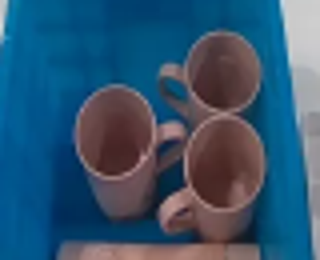
视觉工具实际返回图片 3
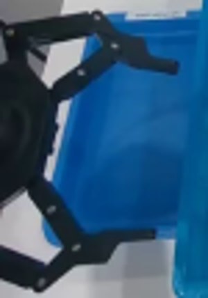
视觉工具实际返回图片 4
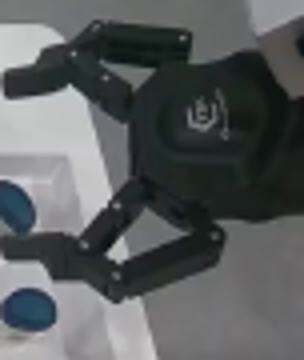
视觉工具实际返回图片 5
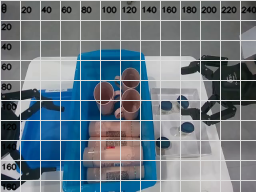
视觉工具实际返回图片 6
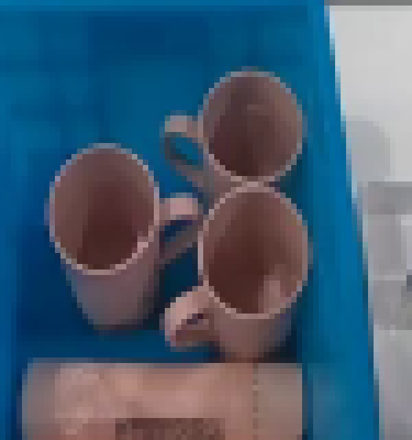
视觉工具实际返回图片 7
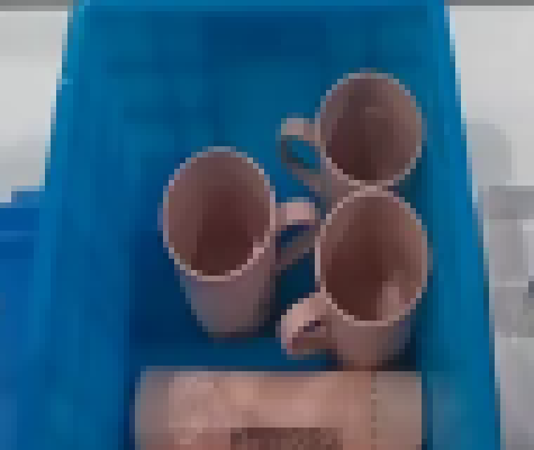
视觉工具实际返回图片 8
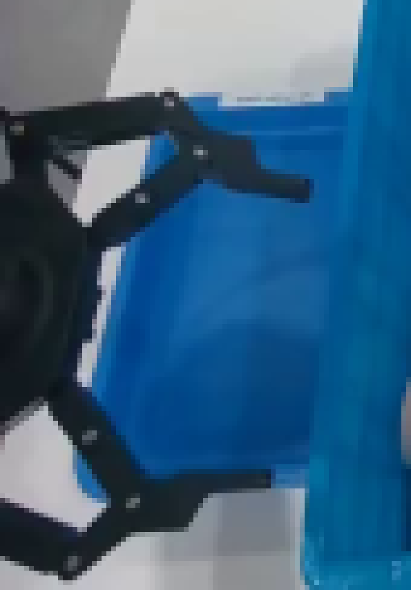
视觉工具实际返回图片 9
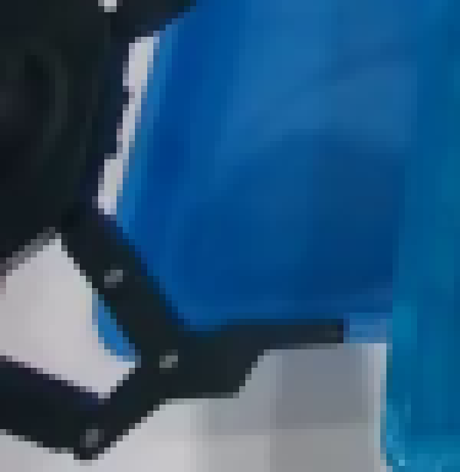
视觉工具实际返回图片 10
视觉工具实际返回图片 11
视觉工具实际返回图片 12
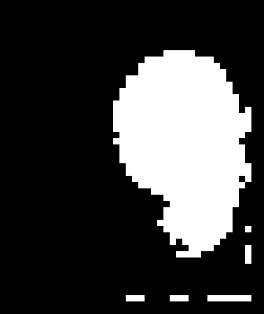
视觉工具实际返回图片 13
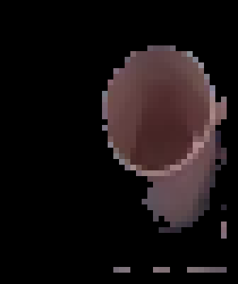
视觉工具实际返回图片 14
视觉工具实际返回图片 15
视觉工具实际返回图片 16
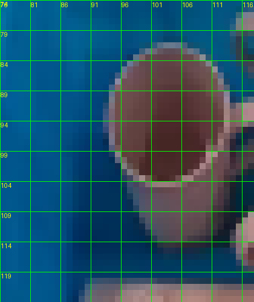
视觉工具实际返回图片 17
视觉工具实际返回图片 18
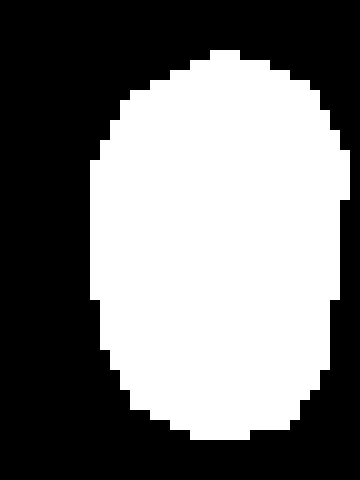
视觉工具实际返回图片 19
视觉工具实际返回图片 20
视觉工具实际返回图片 21
视觉工具实际返回图片 22
视觉工具实际返回图片 23
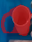
视觉工具实际返回图片 24
视觉工具实际返回图片 25
视觉工具实际返回图片 26
视觉工具实际返回图片 27
视觉工具实际返回图片 28
视觉工具实际返回图片 29
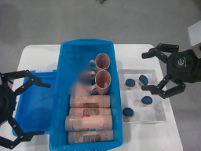
视觉工具实际返回图片 30
视觉工具实际返回图片 31
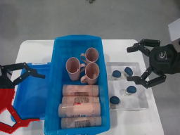
视觉工具实际返回图片 32
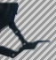
视觉工具实际返回图片 33
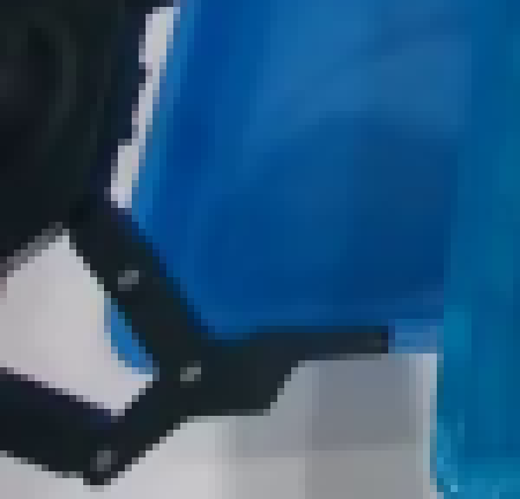
视觉工具实际返回图片 34
视觉工具实际返回图片 35
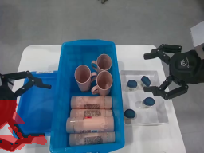
视觉工具实际返回图片 36
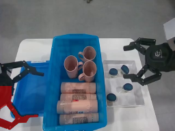
视觉工具实际返回图片 37
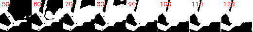
视觉工具实际返回图片 38
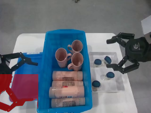
视觉工具实际返回图片 39
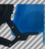
视觉工具实际返回图片 40
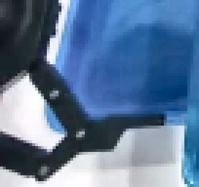
视觉工具实际返回图片 41
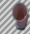
视觉工具实际返回图片 42
视觉工具实际返回图片 43
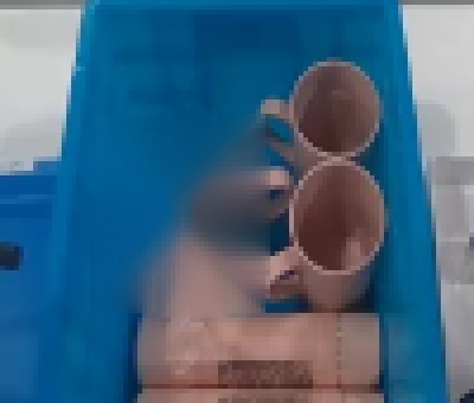
视觉工具实际返回图片 44
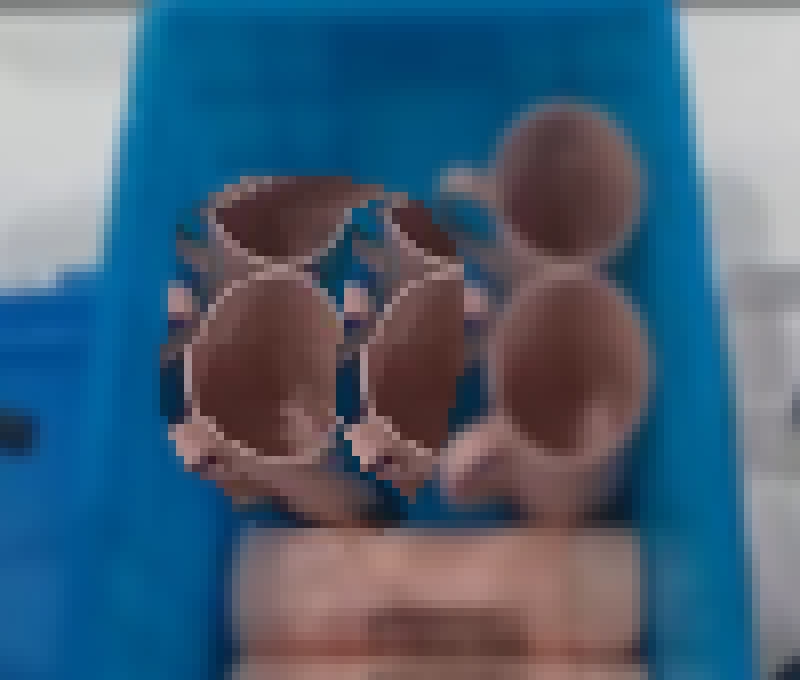
视觉工具实际返回图片 45
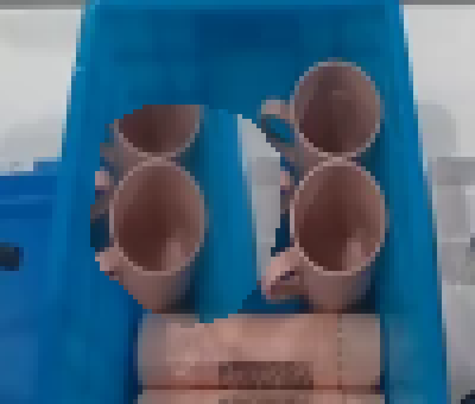
视觉工具实际返回图片 46
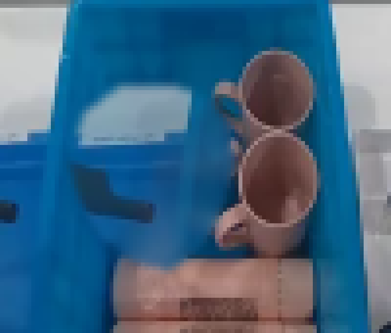
视觉工具实际返回图片 47
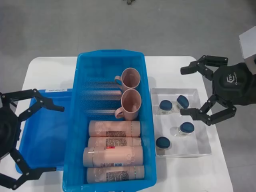
视觉工具实际返回图片 48
视觉工具实际返回图片 49
视觉工具实际返回图片 50

视觉工具实际返回图片 51
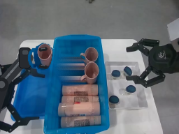
视觉工具实际返回图片 52
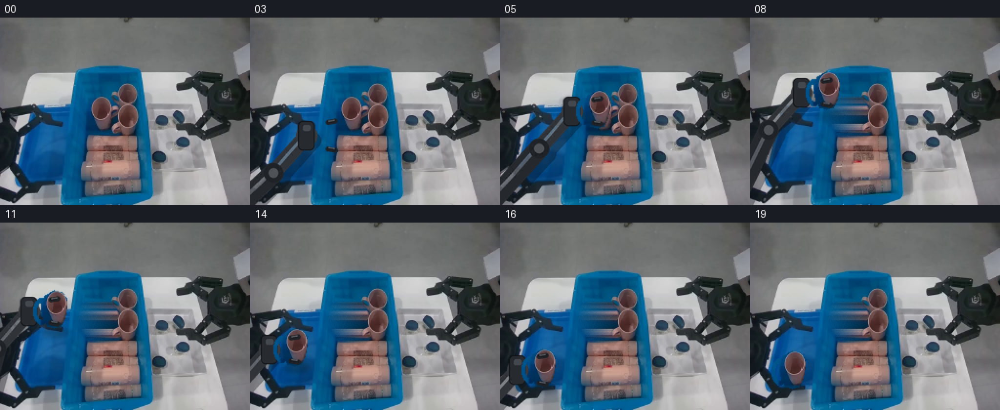
视觉工具实际返回图片 53
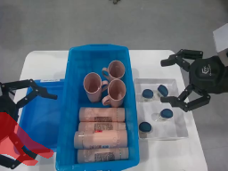
视觉工具实际返回图片 54
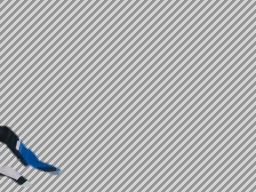
视觉工具实际返回图片 55
视觉工具实际返回图片 56

视觉工具实际返回图片 57
视觉工具实际返回图片 58
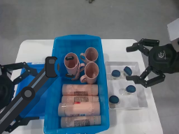
视觉工具实际返回图片 59
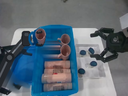
视觉工具实际返回图片 60
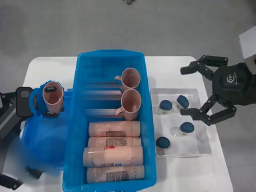
视觉工具实际返回图片 61
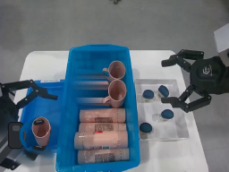
视觉工具实际返回图片 62
保存候选 2 份；完成命令 70 次；可验证图片返回 62 张。原始 API 响应与完整日志保留在本地。